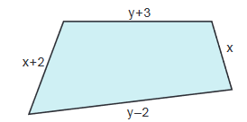

3. Η έννοια της Μεταβλητής
Μάθημα 1 – Βασικές Έννοιες
Να απαντήσετε στις παρακάτω ερωτήσεις:
- Τι γνωρίζετε για την επιμεριστική ιδιότητα
- Ποια διαδικασία ονομάζουμε αναγωγή ομοίων όρων.
Να κάνετε τις πράξεις:
- `3x+2x`
- `a+3a – 4a -3a`
- `-y -3y + y + 3y`
- `3 x - x - 7x + 2x`
Να κάνετε τις πράξεις:
- `2 cdot (x+3)`
- `2 cdot (x-3) -4 cdot (x -1) +2`
Να χρησιμοποιήσετε μεταβλητές για να εκφράσετε με μια αλγεβρική παράσταση τις παρακάτω φράσεις
- Το τριπλάσιο ενός αριθμού.
- Το πενταπλάσιο ενός αριθμού αυξημένο κατά πέντε.
Να απλοποιήσετε τις παραστάσεις:
- `2 cdot (3x + 5) -3x`
- `(3-4)(3x -2y) -4y +8y`
- `-3x cdot (3 -6) - 8x`
- `[2^2-3 cdot (-3 +5)]x -16x`
Να υπολογίσετε τις τιμές των παραστάσεων:
- `2x` για `x =1`
- `2 x -5 y`, για `x =3` και `y = -2`
- `2(x+3y)-4(-x -5y)`, για `x =1` και `y = -1`
- `4x^3`, για `x = -2`
Να υπολογίσετε τις τιμές των παραστάσεων:
- `Α=3(x+2y)+2(3x+y)+y` για `(x+y)=1 / 9`
- `5(x+3y) -10y`, για `(x+y)= -{:1 / 5:}`
Να υπολογίσετε την περίμετρο του παρακάτω τετραπλεύρου:

Η μία πλευρά ενός ορθογωνίου έχει μήκος
`2(x+3y)` και η άλλη έχει
`5x+y`.
- Να υπολογίστε την περίμετρο με την βοήθεια μίας αλγεβρικής παράστασης
- Να βρείτε την τιμή αυτής της αλγεβρικής παράστασης για `(x+y)= 1 / 7` μέτρα.
Να υπολογίστε την τιμή της παρακάτω παράστασης
`{:[(2x^{:-2:} y)^2]^{:-4:}:}/{:(2xy^2)^{:-5:}:}`
αν `x=-1` και `y=-2`
Να κάνετε τις πράξεις:
`Α={:{:-1+{:1 / 2:}:}/{:4-{:2 / 3:}:}:}-{:{:({:1 / 3:}-1):(-2) :}/{:({:1/5:}+2):(-5):}:}-( -4):{:{:1/5:}:} `